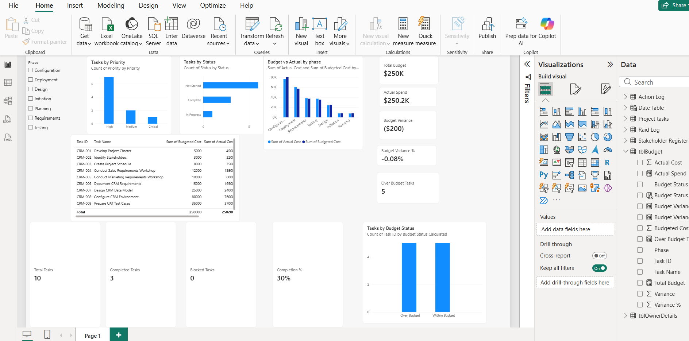

Excel Project Controls
Tracking, Budget, RAID & Stakeholders
Built the core project-control artifacts used to monitor tasks, schedule health, cost performance, risk, actions, and stakeholder communication.
I build structured project controls and reporting workflows that turn task, budget, risk, stakeholder, and delivery data into clear management visibility.
One continuous project story showing how I apply project controls, reporting, data preparation, and business intelligence to practical project-management scenarios.
The case study is designed around a simulated CRM implementation so each skill is applied in a realistic delivery context rather than as a disconnected tutorial.
Built the core project-control artifacts used to monitor tasks, schedule health, cost performance, risk, actions, and stakeholder communication.
Applied formulas to automate project status, KPI reporting, budget variance, schedule checks, and exception identification.
Cleaned, standardized, combined, and refreshed recurring project data using reusable transformation steps.
Built an interactive project reporting model with relationships, a Date table, DAX measures, slicers, cross-filtering, task KPIs, and budget-performance reporting.
Created dynamic measures and management views that respond to phase-level filtering.
The focus is not simply maintaining trackers. It is identifying exceptions, assessing impact, taking action, communicating clearly, and following through.
Screenshots are included to show the actual work behind the skills listed above.
Interactive CRM project reporting showing task progress, priority, budget vs actual, variance, over-budget tasks, and phase-based filtering using DAX measures and slicers.

The current Power BI milestone demonstrates both project-management thinking and business-intelligence fundamentals.
Focused on practical application and project outcomes rather than listing tools without context.
Task tracking, ownership, schedule health, budget monitoring, RAID management, action tracking, stakeholder communication, and management reporting.
Tables, validation, conditional formatting, IF, COUNTIFS, SUMIFS, XLOOKUP, AVERAGE, TODAY(), PivotTables, and PivotCharts.
Data cleaning, standardization, Append, Merge, Group By, refresh, source consistency, and transformation troubleshooting.
Data loading, relationships, cardinality, fact/dimension thinking, Date tables, DAX measures, CALCULATE, filter context, slicers, cross-filtering, and KPI reporting.
The portfolio grows at meaningful milestones as new skills are applied to the same CRM project.
Excel + Power Query
CompletedPower BI: modeling, DAX, schedule and budget reporting, executive dashboarding
In progressJira + Confluence + Microsoft Project
PlannedSQL + Data Fundamentals
PlannedTechnical PM Fundamentals: SDLC, APIs, cloud, environments, CI/CD, integrations
PlannedAI / LLMs + Power Automate
PlannedCapstone + portfolio polish + interview preparation
PlannedOpen to project coordination, project analyst, PMO / project controls, implementation, and Technical PM opportunities.